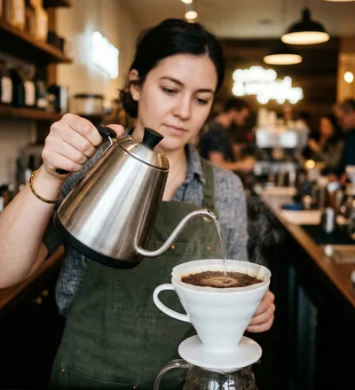

Quiero Café Ijuí
Logotipo oficial
Unidade central na Rua Benjamin Constant com cafés especiais, bebidas geladas, lanches e pratos.
- Endereço: Rua Benjamin Constant, 209
- Bairro: Centro
- Cidade: Ijuí - RS
- Telefone: (55) 92000-8342
Noroeste Colonial do Rio Grande do Sul
Veja cafeterias e bistrôs reais no Centro de Ijuí com endereços verificados na Rua Benjamin Constant e Rua Floriano Peixoto.

Reconhecida pela diversidade cultural e forte atividade educacional no Noroeste gaúcho, Ijuí concentra sua oferta gastronômica e de cafés nas quadras centrais ao redor da Praça da República.
Quem procura uma cafeteria em Ijuí pode concentrar a busca na Rua Benjamin Constant e na Rua Floriano Peixoto, onde ficam opções para consumo no local e cafés para viagem.
Estabelecimentos reais conferidos em fontes públicas em 15/11/2026.
Logotipo oficial
Unidade central na Rua Benjamin Constant com cafés especiais, bebidas geladas, lanches e pratos.

Imagem ilustrativa
Cafeteria urbana no Centro de Ijuí especializada em cafés especiais e bebidas rápidas.
Imagem ilustrativa
Bistrô e cafeteria tradicional no Centro de Ijuí com cafés, salgados e refeições.
Aviso: Endereços, telefones e horários podem sofrer alterações. Confirme com o estabelecimento ou consulte nossas fontes de verificação.
Áreas de destaque pesquisadas: Centro, São Geraldo, Glória. No Centro convivem redes gaúchas, formatos expressos voltados a cafés especiais e bistrôs tradicionais, permitindo escolher entre reuniões de trabalho ou pausas rápidas.
Verifique se o estabelecimento escolhido possui atendimento noturno quando planejar ir após o horário comercial.
A Rua Benjamin Constant concentra opções verificadas próximas entre si, complementadas pela Rua Floriano Peixoto.
Sim, na Rua Benjamin Constant há unidade focada em bebidas ágeis além de casas com salão completo.
Sim, cada cartão possui botão direto para abrir a localização exata no mapa.
Com opções verificadas no coração da cidade, localizar onde tomar café em Ijuí torna-se rápido e confiável.
Explore também guias próximos de café, cappuccino, doces e salgados no estado: